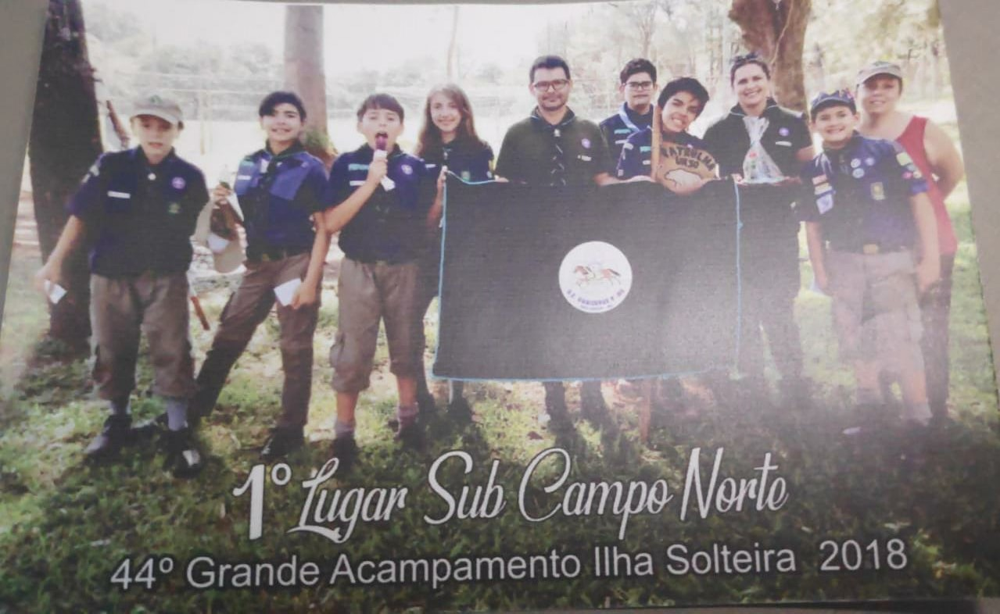
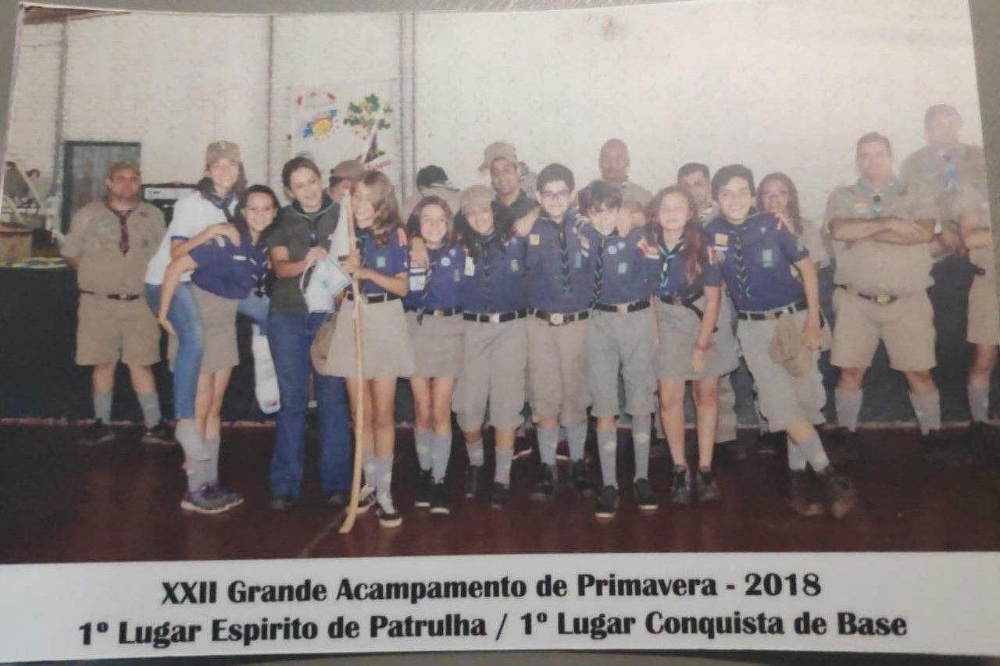
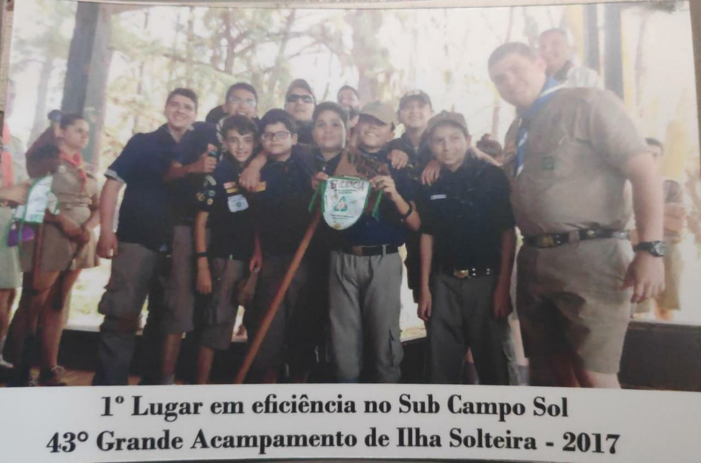
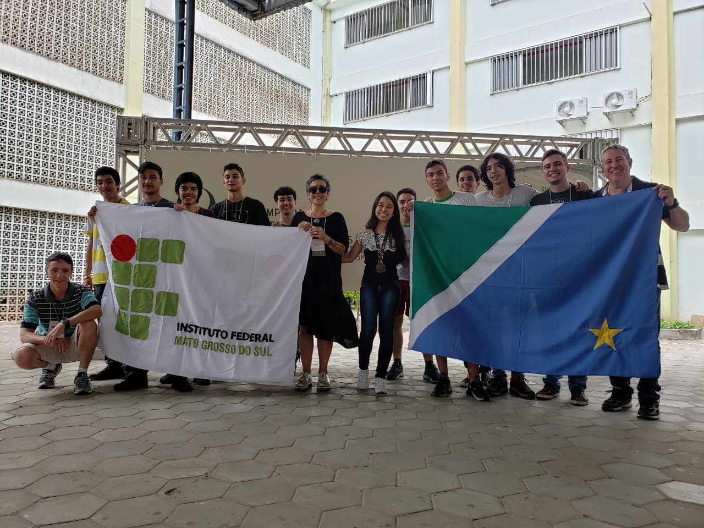
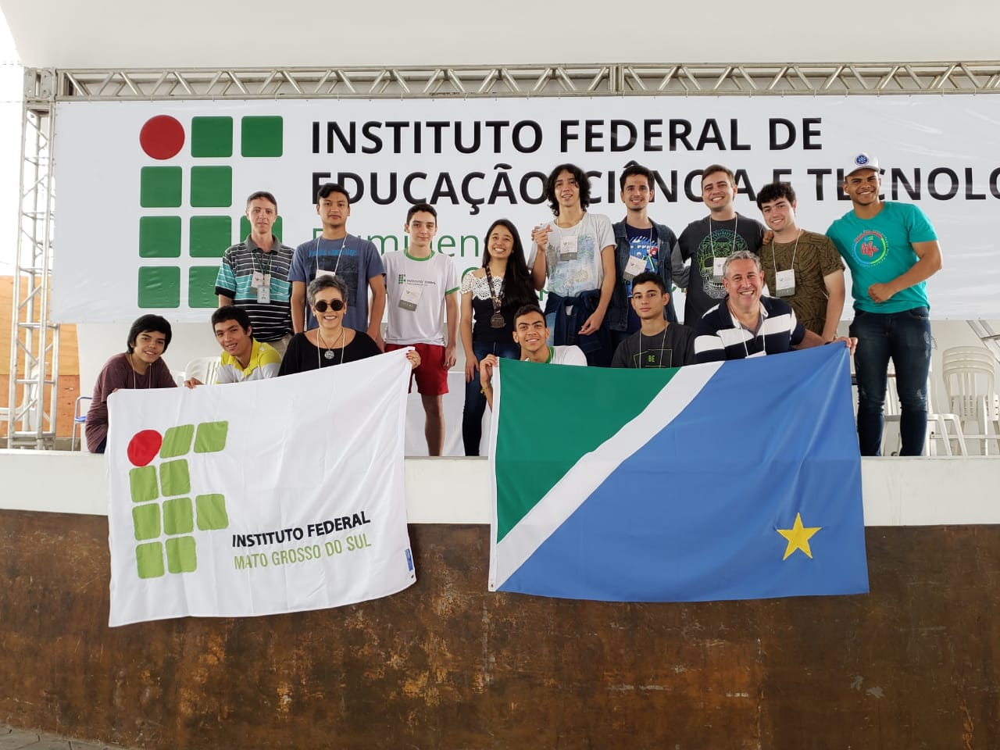
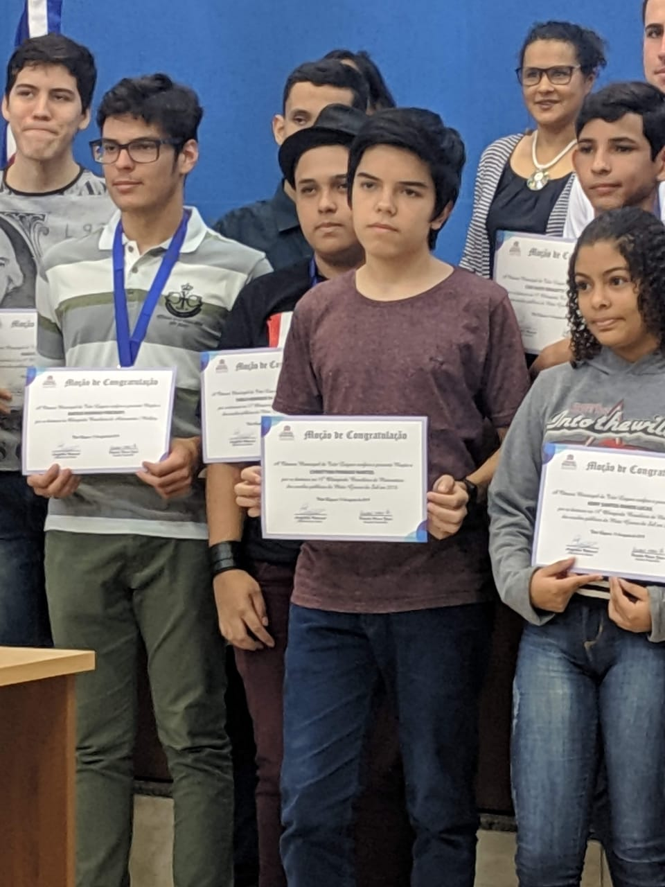
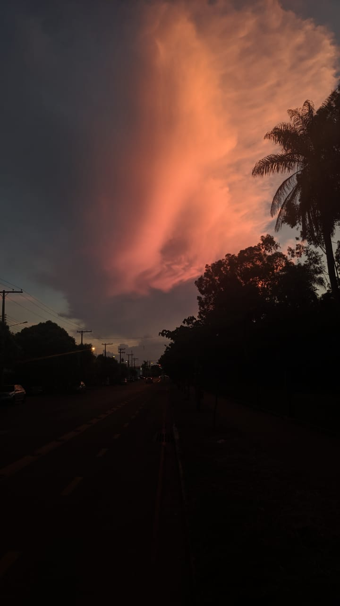
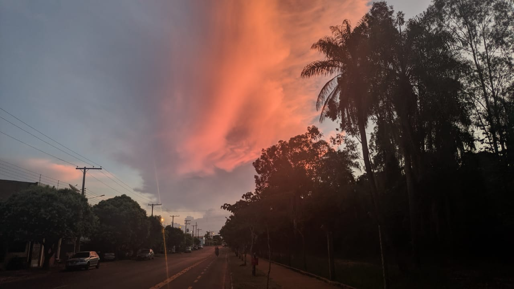
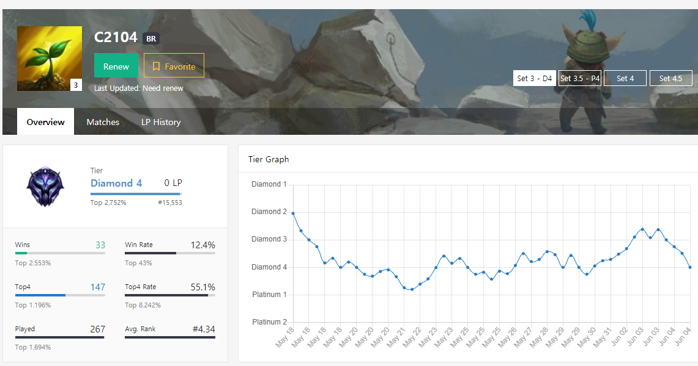

Escoteiro
Escoteiro é um hobbie, que pré-pandemia funcionava normalmente, geralmente acampavámos e faziamos atividades de sobrevivência



Olímpiadas científicas
Esse é um hobbie, que eu realizo provas difícies sobre matérias diversas, astronomia, atronaútica, programação e matemática. E dependendo da olímpiada, quando eu conseguir um resultado satisfatório, viajava para realizar outra fase mais concorrida.



Ciclismo
Esse é um hobbie, que eu pedalo para desestressar e me manter saudável⠀⠀⠀⠀⠀⠀⠀⠀⠀


Jogos
Esse é um hobby casual, que eu tento conseguir ficar muito bom em algum jogo para conseguir um ranque elevado.
